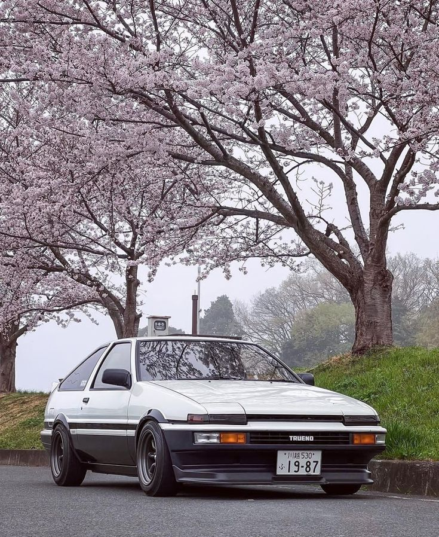
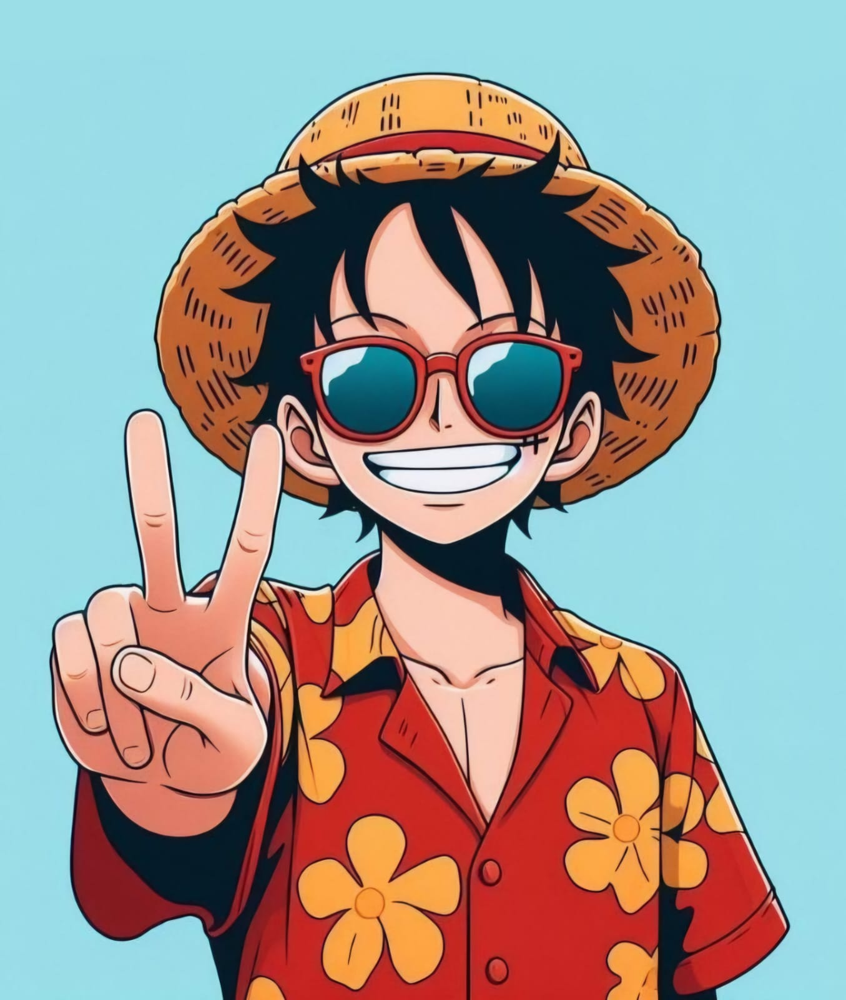

Nurturing Innovators

When talking about legendary cars that transcended time, culture, and motorsport, the Toyota AE86-often referred to simply as the "Hachiroku" Japanese for eightsix stands out as one of the most iconic. Despite its modest specs on paper, this compact Japanese sports coupe gained international fame and cult status among enthusiasts, thanks to its balanced performance, affordability, and cultural significance

Monkey D. Luffy, the beloved protagonist of the iconic anime and manga series One Piece, is a symbol of adventure, freedom, and unbreakable willpower. Created by Eiichiro Oda, Luffy has captivated audiences around the world with his boundless energy, fearless optimism, and relentless pursuit of his dream to become the Pirate King.